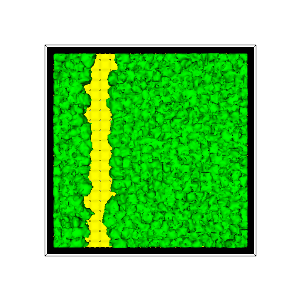
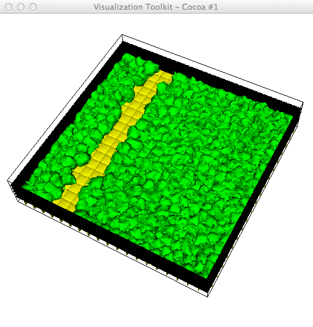

This script allows for a user-specified number of cell types to be rendered (as individual cells):
# renCells.py
# Sample usage: python renCells.py Step_01880 cells.dat 200 -1
import vtk
from vtk.util.numpy_support import numpy_to_vtk, vtk_to_numpy
import sys
import string
argc = len(sys.argv)
#print 'argc=',argc
if argc < 5:
print 'Usage: ',sys.argv[0],' <root-filename[without .vtk]> <celltype-filename> smoothIters maxCells '
raise ValueError, 'Too few input args'
idx=1
root_fname = sys.argv[idx]
print 'root_fname=',root_fname
idx=idx+1
celltype_fname = sys.argv[idx]
idx=idx+1
smoothIters = string.atoi(sys.argv[idx])
idx=idx+1
maxCells = string.atoi(sys.argv[idx])
idx=idx+1
print 'maxCells=',maxCells
cellTypeDict = {}
cellTypeColorDict = {}
fp = open(celltype_fname, 'r')
print '--------- cell params -------'
for line in fp:
items=line.split()
print items
cellTypeDict[int(items[0])] = []
cellTypeColorDict[int(items[0])] = [float(items[1]),float(items[2]),float(items[3])]
print 'cellTypeDict=',cellTypeDict
print 'cellTypeColorDict=',cellTypeColorDict
maxX = 120
maxY = 120
maxZ = 24
ren1 = vtk.vtkRenderer()
ren1.SetBackground(1,1,1)
renWin = vtk.vtkRenderWindow()
renWin.AddRenderer(ren1)
iren = vtk.vtkRenderWindowInteractor()
iren.SetRenderWindow(renWin)
reader = vtk.vtkDataSetReader()
reader.SetFileName(root_fname + '.vtk')
#--------------------
aax0 = vtk.vtkAssignAttribute()
aax0.SetInputConnection(reader.GetOutputPort())
aax0.Assign("CellType","SCALARS","POINT_DATA")
updateFlag = True
if updateFlag:
aax0.Update()
typeRange = aax0.GetOutput().GetScalarRange()
print 'CellType range: ',typeRange # CellId: (748.0, 725445.0); CellType: (1.0, 2.0)
#-------------------
srate = 1
ct_voi = vtk.vtkExtractVOI()
ct_voi.SetInputConnection(aax0.GetOutputPort())
ct_voi.SetVOI(0,maxX,0,maxY,0,maxZ)
ct_voi.SetSampleRate(srate,srate,1)
if updateFlag:
ct_voi.Update()
pd = ct_voi.GetOutput().GetPointData()
ct = pd.GetScalars() # (vtkCharArray)0x10d358730
#print type(ct)
ct_array_all = vtk_to_numpy(ct) # --> numpy.ndarray
#-------
aax = vtk.vtkAssignAttribute()
aax.SetInputConnection(reader.GetOutputPort())
aax.Assign("CellId","SCALARS","POINT_DATA")
if updateFlag:
aax.Update()
idRange = aax.GetOutput().GetScalarRange()
print 'CellId range (all): ',idRange # CellId: (748.0, 725445.0); CellType: (1.0, 2.0)
cid_voi = vtk.vtkExtractVOI()
cid_voi.SetInputConnection(aax.GetOutputPort())
cid_voi.SetVOI(0,maxX,0,maxY,0,maxZ)
cid_voi.SetSampleRate(srate,srate,srate)
if updateFlag:
cid_voi.Update()
pd = cid_voi.GetOutput().GetPointData()
cid = pd.GetScalars() # (vtkCharArray)0x10d358730
cid_array_all = vtk_to_numpy(cid) # --> numpy.ndarray
print 'len(cid_array_all)=',len(cid_array_all)
cont_type = []
smoother = []
normals = []
mapper = []
actor = []
# ------- loop over all requested cell types:
for cellTypeCount in range(len(cellTypeDict)):
cellType = cellTypeDict.keys()[cellTypeCount]
print 'cellType, len(ct_array_all)=', cellType,len(ct_array_all)
for idx in range(len(ct_array_all)):
cid = cid_array_all[idx]
if ct_array_all[idx] == cellType:
if (cid not in cellTypeDict[cellType]):
cellTypeDict[cellType].append(cid) # append new unique cell id
print cellType,') # unique cellids = ',len(cellTypeDict[cellType])
#------------------------------------
cont_type.append(vtk.vtkDiscreteMarchingCubes())
cont_type[cellTypeCount].SetInputConnection(aax.GetOutputPort())
maxCells2 = maxCells
if maxCells < 0:
maxCells2 = len(cellTypeDict[cellType])
#print '--------- type1 isovals:'
for idx in range(maxCells2):
cont_type[cellTypeCount].SetValue(idx,cellTypeDict[cellType][idx])
# print unique_cell_ids_type2[idx]
#print '----------'
smoother.append(vtk.vtkSmoothPolyDataFilter())
smoother[cellTypeCount].SetInputConnection(cont_type[cellTypeCount].GetOutputPort())
smoother[cellTypeCount].SetNumberOfIterations(smoothIters)
# print 'GetEdgeAngle=',smoother[cellTypeCount].GetEdgeAngle()
# print 'GetFeatureAngle=',smoother[cellTypeCount].GetFeatureAngle()
# print 'GetBoundarySmoothing=',smoother[cellTypeCount].GetBoundarySmoothing() # default 'on'
# smoother.BoundarySmoothingOff() # don't see any difference
# print 'GetFeatureEdgeSmoothing=',smoother[cellTypeCount].GetFeatureEdgeSmoothing()
# smoother.FeatureEdgeSmoothingOn() # weird - generates less smooth surface!
smoother[cellTypeCount].FeatureEdgeSmoothingOff() # default 'off'
normals.append( vtk.vtkPolyDataNormals())
normals[cellTypeCount].SetInputConnection(smoother[cellTypeCount].GetOutputPort())
mapper.append( vtk.vtkDataSetMapper())
mapper[cellTypeCount].SetInputConnection(normals[cellTypeCount].GetOutputPort())
mapper[cellTypeCount].ScalarVisibilityOff()
actor.append(vtk.vtkActor())
actor[cellTypeCount].SetMapper(mapper[cellTypeCount])
actor[cellTypeCount].GetProperty().SetColor(cellTypeColorDict[cellType]) # red, green, blue
ren1.AddActor(actor[cellTypeCount])
#----------------------
outline = vtk.vtkOutlineFilter()
outline.SetInputConnection(reader.GetOutputPort())
mapOutline = vtk.vtkPolyDataMapper()
mapOutline.SetInputConnection(outline.GetOutputPort())
outlineActor = vtk.vtkActor()
outlineActor.SetMapper(mapOutline)
outlineActor.GetProperty().SetColor(0, 0, 0)
ren1.AddActor(outlineActor)
#------------------
renWin.SetSize(1000,1000)
renWin.SetSize(800,800)
renWin.SetSize(512,512)
cam = ren1.GetActiveCamera()
ren1.ResetCamera()
#cam.Elevation(40.0)
#cam.Azimuth(degRot) # Elevation would spin about X
#cam.SetRoll(-55.61345070045176)
#cam.SetPosition(211, 913, 115)
#cam.SetFocalPoint(100, 108, 150)
#cam.SetDistance(813)
#cam.SetViewAngle(30)
##cam.SetDirectionOfProjection(-0.32895916388395147, 0.45637174018064514, -0.826747061235334)
#cam.SetViewUp(-0.027, -0.04, -0.998)
#cam.OrthogonalizeViewUp()
renWin.Render()
w2i = vtk.vtkWindowToImageFilter()
w2i.SetInput(renWin)
iw = vtk.vtkPNGWriter()
iw.SetInput(w2i.GetOutput())
iw.SetFileName(root_fname+".png")
#print root_fname,', # unique cells=',len(unique_cell_ids)
iw.Write()
iren.Start()
The accompanying data file (cells.dat):
celltype R G B
1 0 1 0 2 1 1 0 3 0 0 0

